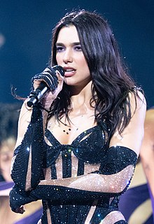
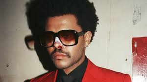

MUZIKA POP
Muzika pop është një zhanër i muzikës popullore që filloi në formën e saj moderne gjatë mesit të viteve 1950
në Shtetet e Bashkuara dhe në Mbretërinë e Bashkuar. Termat muzikë popullore dhe muzikë pop shpesh përdoren
në mënyrë të ndërsjellë, megjithëse e para përshkruan të gjithë muzikën që është e njohur dhe përfshin shumë
stile të ndryshme. Gjatë viteve 1950 dhe 1960, muzika pop përfshiu rock and roll dhe stilet e orientuara nga
të rinjtë që ndikoi. Muzika rock dhe pop mbetën afërsisht sinonim deri në fund të viteve 1960, pas së cilës
pop u lidh me muzikë që ishte më komerciale, kalimtare dhe e arritshme.
Disa nga artistet me te famshem:
- Ariana Grande
- Dua Lipa
- Justin Biber
- The Weeknd
- Rihanna
- Adele
- Beyoncé
- Taylor Swift
Ariana Grande
Ariana Grande-Butera është një këngëtare, kompozitore dhe aktore amerikane. Ajo shquhet për gamën e saj
vokale me katër oktavë dhe përdorimin e saj me firmë të regjistrit të bilbilave, të cilat janë vlerësuar
nga kritikët dhe mediat. Grande ka marrë vlerësime të shumta gjatë karrierës së saj, duke përfshirë dy
çmime Grammy, një çmim Brit, një çmim Bambi, dy Billboard Music Awards, tre American Music Awards, nëntë
MTV Video Music Awards dhe 30 Guinness World Records.
Dua Lipa
Dua Lipa e lindur më 22 gusht 1995 është një këngëtare dhe autore këngësh britanike dhe shqiptare.
Duke poseduar një gamë vokale mezzo-soprano, Lipa ka marrë vlerësime të shumta, duke përfshirë
gjashtë Brit Awards, tre Grammy Awards, dy MTV Europe Music Awards, një MTV Video Music Award, dy
Billboard Music Awards, një American Music Award dhe dy Rekorde Botërore Guinness. . "No Lie" dhe
"New Rules", secili ka mbi 1 miliard shikime në YouTube, me "New Rules" që ka arritur mbi 2.8
miliardë shikime. Albumi i saj debutues Dua Lipa është albumi më i transmetuar i femrave me mbi
10 miliardë transmetime në Spotify.

The Weeknd
Abel Makkonen Tesfaye, i njohur profesionalisht si Weeknd, është një këngëtar, kompozitor dhe aktor
kanadez. I njohur për shkathtësinë e tij zanore dhe lirikën e errët, muzika e tij eksploron arratisjen,
romancën dhe melankolinë dhe shpesh frymëzohet nga përvoja personale. Vlerësimet e tij përfshijnë katër
Çmime Grammy, njëzet Çmime Billboard Music, njëzet e një Juno Awards, gjashtë American Music Awards,
dy MTV Video Music Awards, një Latin Grammy Award, dhe nominime për një Academy Award dhe një Primetime
Emmy Award.
